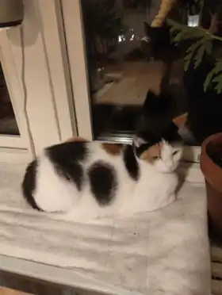

> ← back_to_home
This is where we publish new CATDIVISION work and uploads — visual entries, characters, scenes and creative experiments. The real rescued cats and their stories remain in CATS.

> no_one_left_behind_